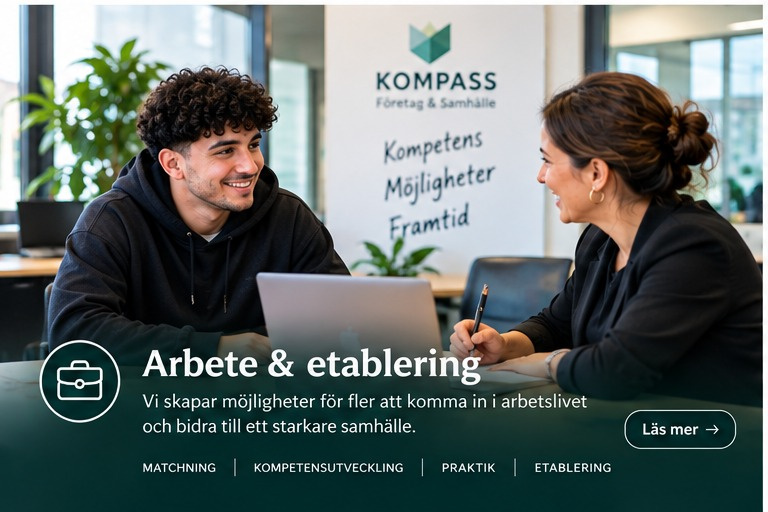
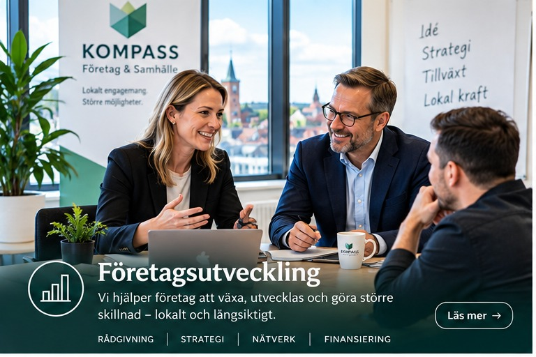
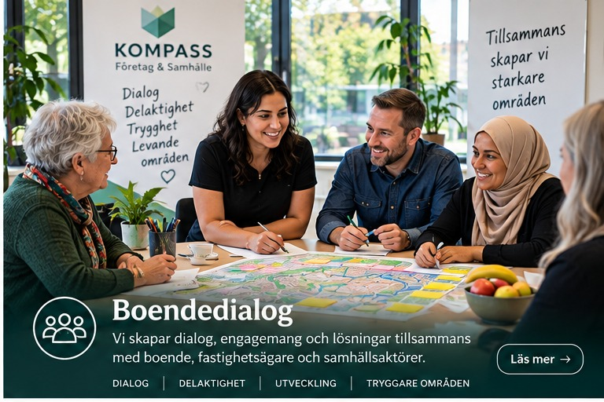
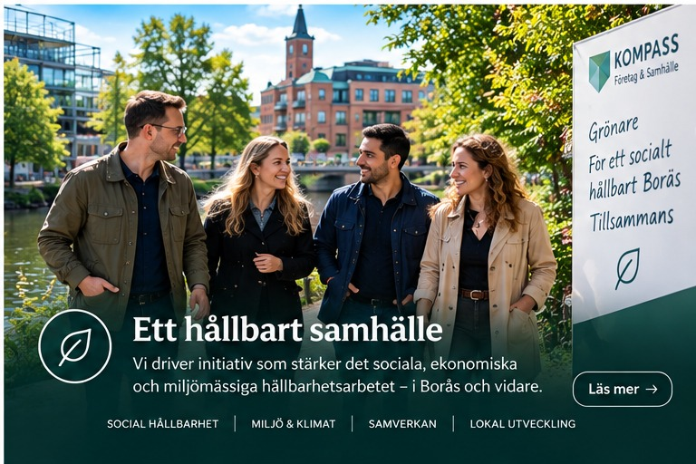

Jag vill komma vidare
Utforska din erfarenhet och dina kunskaper. Tillsammans undersöker vi vägar till arbete, utbildning eller eget företag.
Berätta om dina målVi hjälper människor vidare till arbete, utbildning eller hållbart företagande – och samlar aktörer kring nästa steg.

Utforska din erfarenhet och dina kunskaper. Tillsammans undersöker vi vägar till arbete, utbildning eller eget företag.
Berätta om dina mål
Från verklighetstestad affärsidé och budget till kundkontakt och uppföljning. Vi hjälper dig att göra nästa steg konkret.
Utveckla din idéKartlägg behov, identifiera glapp och undersök hur Kompass kan komplettera era befintliga insatser.
Utforska samverkanHar du yrkeserfarenhet, kunskaper eller en idé? Vi hjälper dig att undersöka om företagande är rätt väg och vad som behövs för att komma vidare.
Vi kartlägger dina kunskaper och resurser och undersöker vilket problem ditt erbjudande kan lösa.
Vi prövar efterfrågan och går igenom pris, budget, registrering och relevanta krav.
Vi planerar kundkontakter och nästa steg. Om företagande inte passar undersöker vi arbete eller utbildning.
Kompass hjälper människor, företag och organisationer att utvecklas genom dialog, praktiskt stöd och samverkan. Vi bygger vidare på lokala resurser med ett perspektiv för hela Sverige.
Stöd att tydliggöra erbjudandet, nå kunder och utveckla verksamheten hållbart.
Läs mer om företagsutvecklingTa vara på kompetens och skapa kontakter med arbetsgivare och utbildningsaktörer.
Läs mer om arbete och etableringDialog som stärker delaktighet och ger ett bättre underlag för gemensamma beslut.
Läs mer om boendedialogUndersök lokala behov, möjligheter i tomma lokaler och vägar till fler producerande företag.
Läs mer om hållbart samhälleUtforska din kompetens och möjliga vägar till arbete, utbildning eller företagande.
Öppna befintlig simulatorEfter resultatet ska du kunna välja att kopiera det eller skicka det till Kompass för en personlig genomgång.
Välj språk:
För dig som vill starta företag eller nyligen har börjat. Undersök vad som är tydligt och vad du behöver arbeta vidare med.
Prova härDet kan vara svårt att veta vilken väg som passar eller vem man ska vända sig till. Kompass hjälper dig att göra möjligheterna tydligare och undersöka ett konkret nästa steg.
Utforska din erfarenhet i simulatorn och få ett underlag att ta vidare. Du väljer själv om du vill kontakta oss för en personlig genomgång.
Undersök kunder, efterfrågan och ekonomi innan du går vidare. Vi kan hjälpa dig från affärsidé till kundkontakt och uppföljning.
Kommuner, myndigheter och företag kan börja med en dialog om befintliga insatser och behov. Tillsammans undersöker vi var Kompass kan bidra.
Vårt långsiktiga mål är att fler människor ska kunna använda sin kompetens och att fler producerande företag ska starta, växa och skapa jobb.
Vad kan du, vad vill du och vilka hinder behöver lösas?
Vi undersöker vilken väg som passar och var efterfrågan finns.
En konkret plan med tydligt ansvar och överenskommen uppföljning.
Vi söker samarbete med kommuner, myndigheter, arbetsgivare, utbildningsaktörer och leverantörer av arbetsmarknadsinsatser.
Vi vill bidra med kartläggning, kompetensmatchning, samordning och uppföljning. Första steget är att förstå vad som redan görs och var människor behöver mer stöd.
Efter kartläggningen kan vi tillsammans föreslå aktiviteter, ansvar och mätbara mål.
Jag heter Erik Mohamed och har bott i Sverige omkring 40 år. Jag har arbetat med människor, föreningar, företag och samhällsfrågor och skapat evenemang som förenar människor och stärker lokala verksamheter.
Med Kompass vill jag hjälpa fler att använda sin kompetens och bidra till fler producerande företag som skapar jobb.
Berätta kort om ditt mål eller din verksamhet.
Stöd att tydliggöra erbjudandet, nå kunder och utveckla verksamheten hållbart.
Kompass hjälper människor, företag och organisationer att utvecklas genom dialog, praktiskt stöd och samverkan. Vi bygger vidare på lokala resurser med ett perspektiv för hela Sverige.
Diskutera ett samarbeteTa vara på kompetens och skapa kontakter med arbetsgivare och utbildningsaktörer.
Kompass hjälper människor, företag och organisationer att utvecklas genom dialog, praktiskt stöd och samverkan. Vi bygger vidare på lokala resurser med ett perspektiv för hela Sverige.
Diskutera ett samarbete
Dialog som stärker delaktighet och ger ett bättre underlag för gemensamma beslut.
Kompass hjälper människor, företag och organisationer att utvecklas genom dialog, praktiskt stöd och samverkan. Vi bygger vidare på lokala resurser med ett perspektiv för hela Sverige.
Diskutera ett samarbete
Undersök lokala behov, möjligheter i tomma lokaler och vägar till fler producerande företag.
Kompass hjälper människor, företag och organisationer att utvecklas genom dialog, praktiskt stöd och samverkan. Vi bygger vidare på lokala resurser med ett perspektiv för hela Sverige.
Diskutera ett samarbete